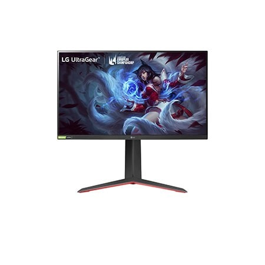

Meilleur écran pour la PS5 : les specs qui comptent vraiment
1440p ou 4K à 120 Hz, VRR et connexion HDMI : vérifiez les modes réellement acceptés par l'écran avant de choisir. Les fréquences maximales annoncées pour le PC ne suffisent pas.
La réponse courte
Pour une PS5 sur un bureau, partez de la taille qui vous convient, puis cherchez une entrée HDMI acceptant explicitement le 1440p ou le 4K à 120 Hz. Vérifiez séparément le VRR compatible PS5 : le logo FreeSync seul ne le prouve pas. Un écran 240 Hz peut convenir, mais la console n'utilise pas sa fréquence maximale.
Mis à jour le . Comparaison de documents officiels, sans test réalisé. Les anciens tarifs de juillet non revérifiés ont été retirés. Aucun stock français n'est confirmé par la seule présence d'une fiche produit.
Un maximum de 165 ou 180 Hz sur DisplayPort ne décrit pas ce que recevra l'entrée HDMI. Demandez le tableau des signaux acceptés, pour la référence et le port utilisés. Le 4K 120 Hz doit y être explicite.
2. Le jeu et son mode graphique
Comme le rappelle l’assistance Sony sur le 120 Hz, le jeu et son mode graphique comptent aussi. Un signal de sortie à 120 Hz ne garantit pas 120 images calculées par seconde. Le jeu doit proposer un mode compatible ; sa définition de rendu peut différer de celle du signal envoyé à l'écran.
3. Le VRR compatible console
Le VRR adapte le rafraîchissement au rythme du jeu. PlayStation a annoncé son déploiement le 25 avril 2022, pour les écrans compatibles HDMI 2.1 et VRR. Notre ancienne mention de mars 2022 était incorrecte. Une compatibilité FreeSync sur PC ne suffit pas à conclure pour la PS5.
4. Le rendu HDR
Le fait d'accepter un signal HDR ne mesure ni le contraste obtenu ni la luminosité dans votre jeu. Comparez le type de dalle, le rétroéclairage et les caractéristiques publiées. Nous ne déduisons pas une qualité HDR mesurée d'un simple logo.
5. Le confort et la latence
Vérifiez profondeur du pied, réglage en hauteur, sortie casque ou haut-parleurs. Le temps de réponse des pixels annoncé par le fabricant ne correspond pas au délai complet entre la manette et l'image. L'ALLM automatise le mode faible latence, lorsqu'il est pris en charge.
240 Hz et nouvelles annonces : quel intérêt sur PS5 ?
La FAQ matérielle PlayStation confirme le 4K 120 Hz. Un écran 240, 360 ou 480 Hz ne permet pas à la console d'envoyer un signal à ces fréquences. Pour un usage exclusivement PS5, jugez donc aussi la dalle, la connectique et le prix du jour. Pour un PC partagé, les modes plus rapides peuvent avoir un intérêt : voir notre guide des fréquences gaming.
Veille : une annonce ne valide pas un écran pour la console
Le communiqué Samsung du 27 août 2026 présente notamment l'Odyssey OLED G8 G80SJ avec trois modes annoncés : UHD 360 Hz, QHD 520 Hz et Full HD 680 Hz. Ces modes PC ne constituent pas une preuve de compatibilité PS5. Le communiqué renvoie les dates et tarifs locaux à une annonce ultérieure : il ne confirme ni précommande ni disponibilité française au 20 octobre. Nous ne le présentons pas comme un écran disponible à acheter.
Avant achat
HDMI, 120 Hz et VRR : trois vérifications distinctes
Le numéro de version HDMI est un premier repère, pas une liste de fonctions garanties. Cherchez une confirmation du mode vidéo visé et du VRR pour la console. PlayStation précise aussi que tous les écrans dotés d'un port HDMI 2.1 ne prennent pas en charge l'ALLM.
Ce qu'il faut demander au fabricant ou au vendeur
Objectif
Preuve à chercher
Ce qui ne suffit pas
1440p 120 Hz
2 560 × 1 440 à 120 Hz sur HDMI, puis test PS5
165 Hz maximum sur DisplayPort
4K 120 Hz
3 840 × 2 160 à 120 Hz sur le port HDMI utilisé
« 4K gaming » ou fréquence PC seule
VRR PS5
Compatibilité console documentée et VRR reconnu dans les informations HDMI
Logo FreeSync ou G-SYNC Compatible seul
ALLM
Fonction présente dans le manuel de l'écran
Numéro HDMI 2.1 seul
Exemple : vous possédez déjà un QHD 165 Hz FreeSync. Avant de le remplacer, demandez son tableau de modes HDMI. Si la PS5 valide le 1440p 120 Hz mais indique que le VRR n'est pas pris en charge, vous pouvez jouer à fréquence fixe ; les deux résultats sont cohérents. Si le VRR est indispensable à votre achat, exigez une confirmation propre à la référence.
Sélection réexaminée
LG 27GP850P-B et Gigabyte M28U : connaître les limites
Les deux modèles déjà cités sur cette page illustrent deux définitions différentes. Sans tarif actuel vérifié, nous les comparons par caractéristiques et ne les classons plus par budget. Vérifiez référence exacte, état, garantie et conditions de retour dans l'offre choisie.
LG UltraGear 27GP850P-B : QHD, sans promesse de VRR PS5

La fiche LG France décrit un 27 pouces Nano IPS QHD, 165 Hz avec surfréquence à 180 Hz, FreeSync Premium et G-SYNC Compatible. Elle ne constitue pas une confirmation de VRR sur PS5 : cette promesse a été retirée de notre sélection. Avant de viser le 1440p 120 Hz, consultez le manuel de la variante livrée et faites le test de sortie sur la console. Notre décodeur de référence LG aide à distinguer les variantes.
Gigabyte M28U : 4K 120 Hz documenté, en 4:2:0
La fiche Gigabyte indique 28 pouces IPS, 3 840 × 2 160, 144 Hz sur PC et deux HDMI 2.1. Elle précise le 4K UHD 120 Hz en 4:2:0 pour PS5 et Xbox Series X. Le sous-échantillonnage 4:2:0 réduit la résolution des informations de couleur ; il ne réduit pas la définition du signal de luminance. Cela remplace notre ancienne formule « sans compromis ».
Le 4K 120 Hz est donc documenté par le fabricant. Nous ne déduisons pas de cette fiche un VRR PS5 garanti dans toutes les configurations : vérifiez le micrologiciel, les fonctions reconnues par la console et les indications de l'assistance M28U avant de choisir.
Pour estimer l'écart de netteté entre QHD et 4K, utilisez le calculateur PPI. Pour une recherche avec un plafond de dépense précis, consultez aussi le guide du budget complet.
Installation
Moniteur ou TV pour la PS5 ?
Sur un bureau, vérifiez la place du pied et le recul disponible : le guide 24 ou 27 pouces peut aider. Depuis un canapé, privilégiez une diagonale lisible à votre distance. Dans les deux cas, vérifiez le mode 120 Hz sur la bonne entrée HDMI. Le type d'appareil ne garantit à lui seul ni faible latence ni bon HDR.
Compatibilité et réglages
PS5 Pro et réglages recommandés
La présentation officielle de la PS5 Pro annonce jusqu'à 120 images par seconde dans les jeux compatibles, avec PSSR et ray tracing selon le titre. Cela ne garantit pas du rendu 4K natif à 120 images par seconde dans tous les jeux. Pour choisir un moniteur, les vérifications 1440p/4K, 120 Hz et VRR restent pertinentes.
Après le branchement : une vérification en cinq étapes
Connexion : utilisez le câble fourni avec la console ou un câble Ultra High Speed adapté au 4K 120 Hz. Pour le diagnostic, reliez directement la console au bon port HDMI de l'écran.
Détection : ouvrez Paramètres > Écran et vidéo > Sortie vidéo > Informations concernant le périphérique HDMI connecté. Lisez les capacités reconnues.
QHD : lancez « Tester la sortie 1440p », qui contrôle SDR/HDR, 60/120 Hz et VRR, puis choisissez 1440p si le test convient.
Fréquence : activez la sortie 120 Hz et sélectionnez le mode compatible dans le jeu. Réglez le VRR sur Automatique lorsqu'il est reconnu.
Couleurs : suivez le guide HDR PlayStation : HDR « Activé lorsque pris en charge », puis « Régler la HDR ». Gardez les réglages RGB automatiques en l'absence de problème de détection.
Dépannage
Si le résultat attendu manque
Contrôles avant de remplacer l'écran ou le câble
Symptôme
Vérification utile
Le menu reste à 60 Hz
Lancer un jeu et son mode 120 Hz ; le menu seul ne valide pas ce mode de jeu.
1440p accepté, VRR refusé
Contrôler séparément la compatibilité VRR console : FreeSync seul ne la prouve pas.
Écran noir en 4K 120 Hz
Vérifier câble, bon port, connexion directe et micrologiciel de l'écran.
Effets visuels avec le VRR forcé
Désactiver « Appliquer aux jeux non compatibles » et comparer dans le même jeu.
FAQ
Questions fréquentes sur les écrans PS5
Quelle taille d'écran pour la PS5 ?
Choisissez selon le recul et la place disponible. Comparez les dimensions réelles et la profondeur du pied ; 27 ou 32 pouces sont des pistes pour un bureau, pas une obligation.
Faut-il du 4K ou du 1440p 120Hz pour la PS5 ?
Les deux sont des options si l'entrée HDMI accepte le mode visé. Comparez netteté, tarif du jour et compatibilité console. Une sortie 4K à 120 Hz ne garantit pas un rendu natif 4K à 120 images par seconde dans le jeu.
Le HDMI 2.1 est-il obligatoire pour la PS5 ?
PlayStation le demande pour le 4K 120 Hz et documente le VRR sur les écrans HDMI 2.1 compatibles. Pour le 1440p 120 Hz à fréquence fixe, vérifiez le tableau des modes HDMI de l'écran. Le numéro de version seul ne garantit pas toutes les fonctions.
Un écran 240Hz est-il utile sur PS5 ?
La PS5 n'exploite pas une entrée à 240 Hz. Un tel écran peut convenir pour sa dalle ou pour partager un PC, mais vérifiez d'abord les modes HDMI acceptés à 120 Hz.
Faut-il un écran ou une TV pour la PS5 ?
Choisissez selon la distance et l'installation. Moniteur et TV doivent chacun être vérifiés pour le 120 Hz, le VRR et le HDR ; aucun de ces formats ne garantit à lui seul une meilleure latence ou une meilleure image.
La PS5 Pro change-t-elle le choix de l'écran ?
Pour un achat QHD ou 4K, vérifiez toujours HDMI, 120 Hz et VRR. La puissance et le PSSR de la Pro peuvent modifier le rendu des jeux compatibles, sans rendre utile une entrée à 240 Hz sur console.
Sources et méthode
Les liens officiels figurent au plus près des caractéristiques et des conseils. Vérification documentaire du 20 octobre 2026 : aucune mesure de latence, aucun test HDR ni essai de compatibilité effectué par notre site. Les caractéristiques restent celles des fabricants ; une annonce ne vaut ni précommande ni stock disponible en France.
Transparence : le site contient des liens affiliés sur certaines pages. Ce guide compare des documents officiels et ne présente pas de résultats de tests réalisés par notre rédaction.